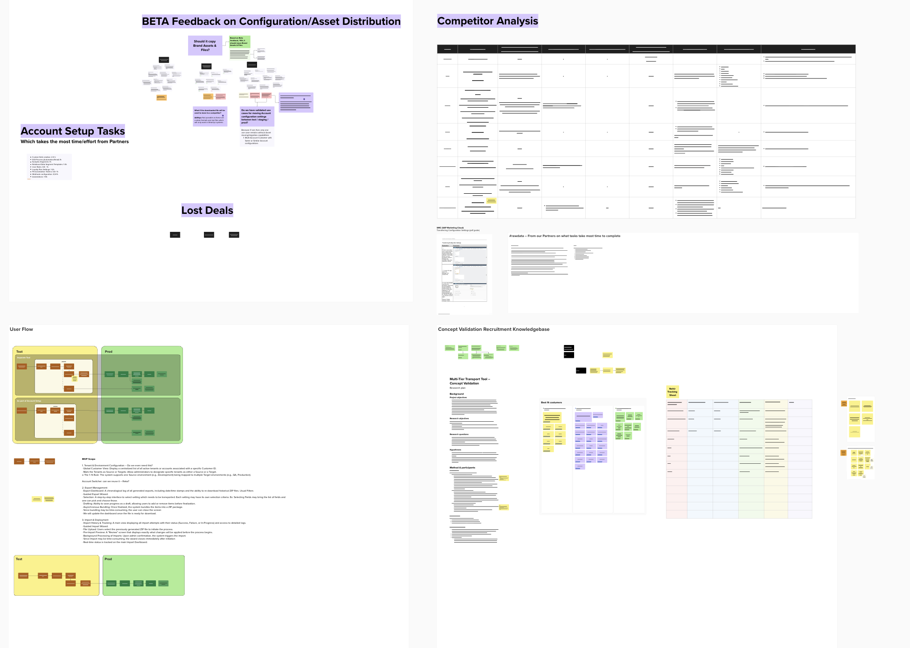
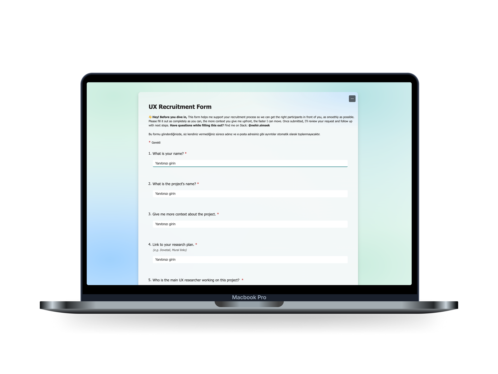

01
Research projects
What research was coming up and what questions researchers were trying to answer.
Research projects don't start with the interview. Before researchers can talk to the right people, someone has to find them.
The challenge wasn't simply finding people.
It was:
How might we make participant recruitment more
structured, targeted, and efficient for researchers?

I built a structured process to move from an initial research request to the right people in the room.
Every research project had different requirements. Some researchers needed Customer Success Managers. Others needed designers, marketers, IT specialists, specific SAP personas, or external customers.
I created a research intake questionnaire to understand what projects were coming up, when researchers were available, and which participant profiles would be most relevant to each study.

What research was coming up and what questions researchers were trying to answer.
Which roles, personas, customers, or internal stakeholders researchers wanted to speak with.
When researchers were available so recruitment could be coordinated around real session windows.
Once researchers submitted their requirements, I translated them into a structured recruitment tracker. This became my working system for identifying, prioritizing, and following up with potential participants.
Across 7 research projects, I supported researchers by identifying, contacting, screening, and coordinating relevant internal stakeholders and SAP customers.
Researchers had a structured way to communicate who they needed, what they were researching, and when they were available.
Participant searches were based on specific research criteria rather than broad outreach.
I took ownership of identifying and coordinating potential participants, allowing researchers to focus more on the research itself.
This experience taught me that research operations can have a significant impact on research quality, even when they happen behind the scenes.
The work isn't always visible in the final research report. But getting the right person into the room is part of designing the research experience too.